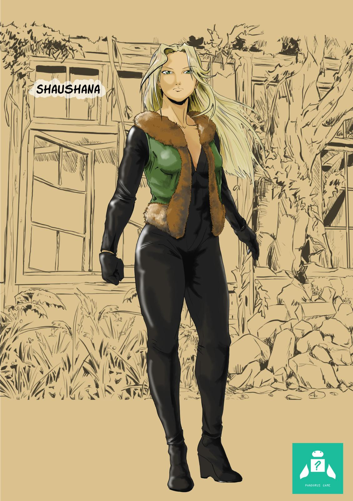
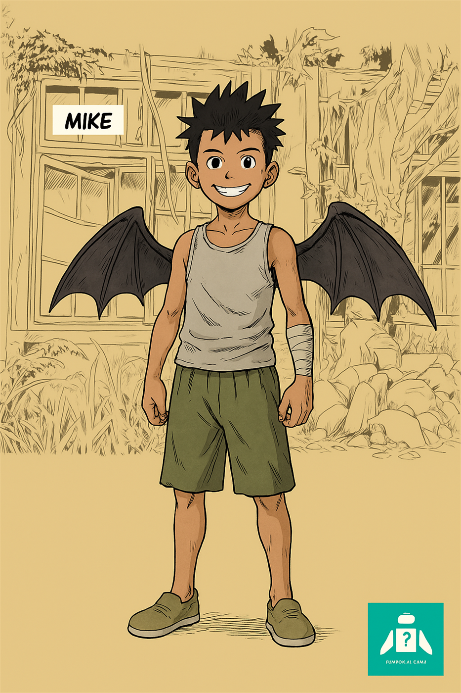
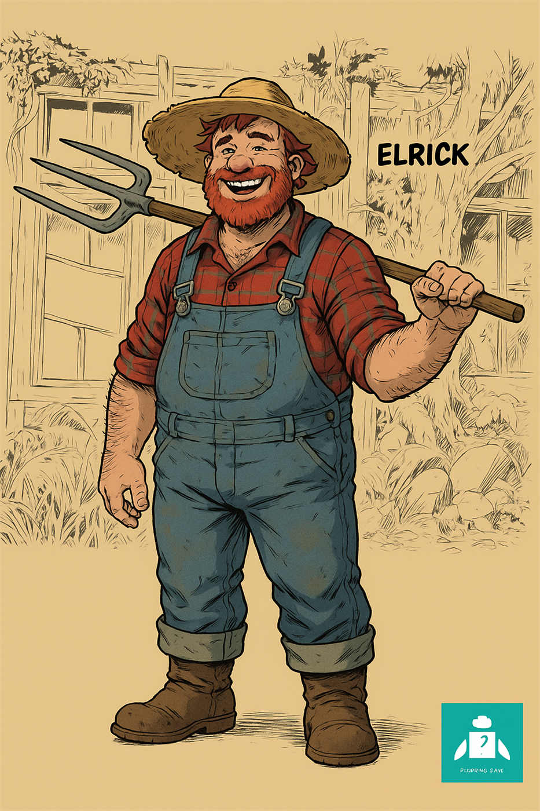

Univers vivant, mémoire ancienne, forces en éveil
Pandorus
Archive d'un monde qui respire, observe et se souvient.
Entre souffle primordial, territoires conscients, figures légendaires et créatures indomptées, Pandorus ouvre un monde où chaque pas réveille une mémoire plus ancienne que les royaumes eux-mêmes.
Fragment d'ouverture
Ici, les fleuves gardent la mémoire, les terres réagissent, les créatures pressentent l'altération avant les hommes, et certaines naissances ne relèvent pas du hasard mais de la nécessité.
Commencer par
Les personnages
Entrer dans Pandorus par Shaushana, Shan et Franklin pour comprendre d'abord les visages du récit.
Suivre ce cheminCommencer par
Les lieux
Lire les fleuves, les seuils et les territoires conscients avant de revenir vers ceux qui les traversent.
Entrer par les lieuxCommencer par
Les bascules
Suivre le déséquilibre du vivant, les révélations et les passages qui structurent l'histoire.
Lire les basculesEntrer par les visages
Fiches majeures
Shaushana, Shan, Franklin, Elrick et les figures du Vrax composent les lignes de force du récit.
Ouvrir les fichesEntrer par les lieux
Lieux traversés
Passage, Passar, Bassaï, Vrax et cœur du Vrax donnent au récit sa respiration et sa tension.
Explorer les lieuxEntrer par les bascules
Chronologie vivante
Naissances, fractures, révélations et déséquilibre du vivant dessinent la progression du monde.
Suivre les événementsEntrer par les cartes
Cartes et ciels
Constellations, mondes lointains, terres conscientes et géographies anciennes prolongent le mystère.
Explorer les cartes


Sceaux du monde
Les grandes familles de Pandorus
Ce qui respire, réagit et reconnaît les altérations.
Les traces du monde, gardées par les terres, les eaux et les anciens.
La fracture lointaine dont les échos reviennent encore.
La veille, la défense et l'intelligence du territoire conscient.
Le ciel, les constellations et les mondes qui prolongent Pandorus.
Forces
Figures majeures
Shaushana, Shan, Franklin et Eben dessinent désormais une tension plus large : éveil, mémoire, héritage violent, lecture du vivant et rééquilibrage.
Bestiaire
Créatures signatures
Félou, Renastar, Lumineaux, Aligaphoques et peuples du Vert donnent au monde sa part d’instinct, de grâce blessée et de veille animale.
Navigation
Point d’entrée
Les fiches, la chronologie, le bestiaire et l’arbre de relation permettent d’entrer dans Pandorus par le chemin que tu veux.
Matière du monde
Ce qui fait tenir Pandorus
Un souffle originel, des territoires qui pensent, des créatures qui réagissent avant les hommes, et des figures anciennes qui sentent revenir ce qui n'a jamais totalement disparu.
Réseaux
Suivre Pandorus
Fiches
Archives vivantes
Chaque fiche rassemble une présence, une trajectoire et une manière d'habiter Pandorus. Ici, les personnages ne sont pas seulement listés : ils apparaissent comme des forces du monde, avec leurs traces, leurs liens et leur mémoire.

Pandorien
Shan
Combattant solitaire devenu allie de Shaushana et Franklin, Shan est marque par une enfance rude, une discipline extreme, une relation instinctive au danger et une transformation profonde au contact du Vrax.
Biographie
Shan grandit loin de toute douceur, dans un environnement où l'apprentissage passe par l'endurance, la chasse et la violence. Enfant, il est formé par ses parents à observer, frapper, survivre et ne jamais montrer de faiblesse. Cette éducation forge un combattant redoutable, mais aussi un être fermé sur lui-même, qui apprend très tôt à vivre sans aide.
Le traumatisme majeur de son existence survient lors de l'affrontement contre Eben. Face à cette créature hors norme, ses parents tombent et Shan reste seul. Cet événement brise son enfance et transforme sa vie en une longue période de survie solitaire, de perfectionnement physique et de fermeture émotionnelle.
Au début du récit, Shan réapparaît comme un traqueur et un combattant déjà accompli. Il suit d'abord Shaushana à distance, intrigué par sa présence et par la manière dont elle agit sans imposer sa force comme lui le ferait. Leur rencontre évolue vers la confrontation, puis vers une forme de respect mutuel. À partir de là, Shan devient un allié actif du groupe, même s'il continue à exprimer ses liens par la tension, l'observation et le combat plutôt que par les mots.
Son parcours montre un personnage en transition : il reste brutal, direct et instinctif, mais il commence à se confronter à un monde qu'il ne peut plus seulement dominer par la force. Le voyage vers le Vrax, sa relation avec Franklin et surtout son lien avec Shaushana l'obligent peu à peu à changer.
Au cœur de son entrée dans le Vrax, Shan se retrouve face à des adversaires qui ne cherchent pas seulement à le dominer par la force, mais qui lisent leur terrain comme une mécanique collective. Cette attaque du Vrax le désorganise autrement que ses combats précédents et ouvre une nouvelle étape dans son parcours.
En poursuivant Franklin jusqu'au cœur du Vrax, Shan franchit encore un cap. L'affrontement contre les Guéplynx, puis contre Gardien Isma, lui montre que certaines zones du monde ne cèdent ni à la rage ni à la vitesse brute. À partir de là, il commence à changer sa manière de combattre : moins pour écraser, davantage pour lire, tenir et avancer avec les autres.
Plus au sud, après la sortie du Vrax, cette transformation devient plus nette encore. Devant les papillons vidés, le Renastar mourant, le village des Renards frappé et surtout la mort de Hez face à Kuji, Shan comprend que le combat à venir ne pourra plus se gagner par la seule intensité. Il garde sa violence, mais elle se convertit désormais en direction : protéger les siens, tenir face à ce qui veut remplacer le monde, et suivre jusqu'au bout la piste ouverte vers le Sombrail.
À la taverne du Sombrail, Shan reçoit une autre forme de choc. Le souvenir transmis par Brad, la vision des Briscards, la présence d'Elrick jeune et l'origine ancienne de la nuit lui montrent que la menace actuelle n'est pas un accident nouveau, mais une ligne qui recommence. Sa force devient alors moins impulsive, plus attentive aux signes qui précèdent le combat.
Après les ruines du Vert, la mort du Capitaine et la route rouverte vers l'ouest, Shan garde cette même force, mais elle ne sert plus seulement à frapper. Elle protège désormais une marche plus lourde, portée par le deuil, par le parasite sauvé et par l'entrée réelle dans la Sombra.
Résumé
Shan a été élevé dans la dureté par ses parents, formés à la chasse et au combat. Leur mort face à Eben le laisse seul très jeune et forge chez lui une vision brutale du monde : survivre, frapper juste et ne dépendre de personne.
Au fil du récit, il croise Shaushana après l'affrontement contre un Felou, la suit d'abord par curiosité, puis s'implique vraiment à ses côtés. Son lien avec elle se construit dans la confrontation, le respect et une fascination croissante pour une force qu'il ne comprend pas encore totalement.
Après la taverne du Sombrail, le chemin de Shan le ramène au noyau le plus ancien de sa blessure : le Vert, puis Eben lui-même. Leur affrontement ne ravive pas seulement sa colère d'enfance. Il l'oblige à relire le combat, à quitter la vengeance brute et à atteindre une forme d'équilibre qu'il n'avait jamais vraiment connue.
Profil
Caractère
Ferme, observateur, direct et souvent provocateur, Shan cache sous sa dureté une vraie capacité d'attachement et un sens moral réel.
Forces
Excellente maîtrise du combat rapproché, grande lecture du danger, endurance élevée et instinct de survie exceptionnel.
Faiblesses
Il contrôle mal ce qui échappe à ses schémas habituels, accepte difficilement l'impuissance et exprime peu ses émotions.
Relations connues
Shaushana
Point de bascule dans son parcours. Il la voit d'abord comme une énigme et une adversaire potentielle, puis comme une alliée essentielle.
Franklin
Compagnon de route qu'il protège souvent de façon rude, mais sincère, surtout lors des affrontements et du voyage vers le Vrax.
Ossah Lyla
Au cœur du Vrax, l'intervention d'Ossah Lyla brise la logique du duel pur et oblige Shan à reconnaître une autorité du vivant qu'il ne peut pas simplement frapper.
Eben
Figure traumatique de son passé puis adversaire retrouvé dans le Vert. Leur duel finit par déplacer Shan hors de la seule vengeance et referme une part de sa dette ancienne.
Évolution dans l'histoire
Avant le récit
Formation brutale
Shan grandit dans la chasse et le combat, forge son corps et son esprit dans un cadre extrêmement dur.
Fin du Jour 1
Observation de Shaushana
Après la mort du Felou, il suit Shaushana et Franklin, intrigué par leur trajectoire et la force de la jeune femme.
Jour 2
Combat fondateur
Son duel contre Shaushana transforme leur relation en respect mutuel et l'ancre dans l'histoire principale.
Jours 3 à 9
Allié actif
Il combat aux côtés du groupe, se confronte à un monde qu'il ne peut plus seulement dominer et commence à changer.
Jour 10
Adaptation forcée
Entre les Guéplynx, Gardien Isma et l'intervention des créatrices, Shan comprend que le vivant ne se traverse pas seulement par la force mais aussi par la lecture du monde.
Jour 12
Duel avec Eben
Après la nuit passée au bord du Sombrail, Shan entre dans le Vert, retrouve Eben, traverse enfin la source de son traumatisme et gagne une forme d'équilibre nouvelle au lieu d'une simple vengeance.
Jour 12
Reprise de route
Marqué par le duel mais transformé, Shan repart avec la pierre du Vert et atteint avec les autres les ruines où le Capitaine est enfin retrouvé.
Nuit du Jour 12
Tenir les ruines
Quand Bouldouger et Nogard reviennent, Shan tient la ligne du groupe jusqu'à la mort du Capitaine et traverse la nuit comme une guerre désormais ouverte.
Jour 14
Seuil de la Sombra
Après la sépulture du Capitaine et la marche vers l'ouest, Shan franchit la Sombra avec une force plus tenue, tournée vers ce qui doit être lu autant que combattu.
Shaushana

Pandorienne
Shaushana
Figure centrale du récit, Shaushana apparaît comme une présence calme, instinctive et profonde, intimement liée au vivant et aux forces qui traversent Pandorus.
Biographie de Shaushana
Shaushana ouvre les yeux dans un monde déjà formé, mais qu'elle perçoit d'emblée comme vivant, traversé par une pulsation profonde. Elle n'entre pas dans Pandorus comme une étrangère ordinaire : elle semble aussitôt sensible à ses rythmes, à ses forces et à ses signes les plus subtils.
Son premier grand acte est de sauver Franklin d'un Felou. Cet affrontement révèle déjà sa nature : elle observe vite, agit sans hésitation inutile et s'adapte au danger avec une précision presque instinctive. À partir de ce moment, elle laisse une trace dans le monde et entre dans une trajectoire qui la dépasse elle-même.
Au fil du voyage, Shaushana développe un rapport singulier avec les papillons, certaines créatures et les manifestations du vivant. Elle ne se contente pas de voir le monde, elle le ressent. Cette sensibilité grandit jusqu'à devenir un axe majeur du récit, notamment face au déséquilibre qui touche les animaux, les plantes et les fleuves.
Son lien avec Shan, Franklin et plus tard Elrick construit progressivement sa place : elle devient une combattante, une protectrice et sans doute une clé dans la compréhension du mal qui revient. Plus l'histoire avance, plus Shaushana apparaît comme une figure appelée à comprendre quelque chose de fondamental sur Pandorus, sur son passé et sur elle-même.
En entrant dans le Vrax, Shaushana se heurte à un territoire qui ne se contente plus d'être un décor vivant : il répond activement à sa présence. Face à l'interception de Levy, Gardien Isma et Wingard, elle se heurte à une intelligence territoriale plus organisée que tout ce qu'elle avait affrontée jusque-là, et sa réaction lors de la capture de Franklin révèle à quel point son engagement affectif a évolué.
Plus loin encore, au cœur du Vrax, Shaushana est reconnue autrement. Au contact d'Ossah Lyla, de Nastaz et du cimetière des papillons, son lien au vivant cesse d'être seulement intuitif : il prend une profondeur plus ancienne, plus sacrée, comme si le monde confirmait enfin ce qu'il percevait en elle depuis le début.
En quittant le Vrax, cette reconnaissance se prolonge autrement. Face aux papillons vidés puis au Renastar qui s'éteint entre ses mains, Shaushana perçoit que ce n'est plus seulement la vie qui faiblit, mais la création elle-même qui est touchée. Au village des Renards, sa présence devient alors un point d'équilibre naturel : au milieu du deuil, de la violence de Kuji et de la naissance d'un nouveau groupe, elle apparaît comme le centre calme autour duquel la Communauté des Papillons commence à se former.
Dans la taverne du Sombrail, le souvenir des Briscards la traverse plus profondément que les autres. Ce qu'elle ressent face au sauveur ancien, à Elrick jeune et à l'origine du ciel assombri confirme que son lien au vivant dépasse la simple perception : quelque chose en elle reconnaît l'équilibre primordial que le monde tente encore de préserver.
Après la taverne, Shaushana poursuit la route vers le Vert et les ruines cachées au-delà. Elle ne se contente plus d'accompagner le groupe : sa présence aide à tenir la traversée du Sombrail, l'entrée dans la forêt et la découverte finale du Capitaine captif, comme si le monde continuait à s'ouvrir en sa présence.
Après la nuit des ruines, Shaushana devient aussi celle qui porte la transmission arrachée au Capitaine. Entre le deuil, le parasite sauvé et l'entrée dans la Sombra, son lien au vivant ne s'affaiblit pas : il devient une manière de garder le groupe accordé à ce qui reste juste.
Résumé de Shaushana
Shaushana est introduite comme une jeune femme calme et puissante, dont les capacités semblent liées à l'équilibre du vivant. Son parcours commence par une rencontre décisive avec Franklin, se poursuit dans le voyage vers le Passar puis le Vrax, et la place au cœur du mystère qui traverse l'univers.
Sa force ne tient pas seulement à ses qualités de combattante, mais aussi à sa manière d'écouter, ressentir et comprendre un monde que beaucoup cherchent seulement à affronter ou à contrôler.
Plus le voyage avance vers le Sombrail puis le Vert, plus elle apparaît comme une présence de cohérence : quelqu'un qui ne domine pas Pandorus, mais qui l'aide à ne pas se rompre complètement.
Profil de Shaushana
Caractère
Calme, attentive, peu bavarde et très maîtrisée, elle agit avec une justesse qui contraste avec la violence du monde autour d'elle.
Forces
Grande capacité d'adaptation, sang-froid au combat, perception fine du vivant et émergence d'une puissance lumineuse singulière.
Faiblesses
Elle comprend encore mal sa propre nature et reste exposée à des forces anciennes qui semblent réagir directement à sa présence.
Relations connues de Shaushana
Franklin
Premier lien concret de son aventure. Elle le sauve, le suit puis construit avec lui une relation de confiance et de protection mutuelle.
Shan
Rival puis allié, Shan reconnaît en elle une force inhabituelle. Leur relation passe par le combat, le respect et une attirance profonde pour ce qu'ils représentent l'un pour l'autre.
Elrick
Elrick perçoit rapidement qu'elle n'a pas seulement écouté l'histoire du monde : il comprend qu'elle y est liée d'une façon intime.
Ossah Lyla et Nastaz
Les créatrices du Vrax ne la lisent pas comme une simple intruse. Leur regard sur Shaushana confirme qu'elle est déjà prise dans une logique plus vaste du vivant.
Évolution de Shaushana dans l'histoire
Jour 1
Éveil dans Le Passage
Shaushana prend conscience du monde et de sa pulsation vivante avant de rencontrer le danger et Franklin.
Jour 1
Premier combat fondateur
Elle affronte le Félou, sauve Franklin et manifeste déjà une façon unique d'agir au sein du vivant.
Jour 2
Defense du bidonville
Face aux créatures corrompues, elle combat au premier plan et confirme sa place centrale dans le groupe.
Jours 3 à 5
Révélation progressive
Entre Elrick, le Bassaï et le Vrax, Shaushana semble de plus en plus reconnue par les forces du monde lui-même.
Jour 10
Reconnaissance des créatrices
Au contact d'Ossah Lyla, de Nastaz et du cimetière des papillons, son lien au vivant prend un sens plus ancien et plus central encore.
Nuit du Jour 11 à Jour 12
Présence de cohérence
De la taverne à la nuit du Sombrail, puis du Vert jusqu'aux ruines, Shaushana accompagne un passage de mémoire, d'épreuve et de révélation sans jamais perdre son lien au vivant.
Nuit du Jour 12
Transmission du Capitaine
Dans le combat des ruines, Shaushana reçoit la charge du parasite sauvé par le Capitaine et devient l'un des axes de tenue du groupe après sa mort.
Jour 14
Entrée dans la Sombra
Après la sépulture et la marche de l'ouest, Shaushana franchit la Sombra et approche Bichette avec le même lien intact au vivant, mais chargé d'une responsabilité nouvelle.
Pandorien
Franklin
Jeune habitant du Passar, Franklin est l'un des premiers liens humains de Shaushana et un moteur essentiel de la quête vers le Vrax, jusqu'à révéler en lui un lien ancien avec ce territoire.
Biographie
Franklin vit près du fleuve Passar avec ses frères Mike et Gérôm, dans un bidonville construit autour de la survie, de l'entraide et du soin apporté aux créatures. Il connaît les dangers du terrain, les flux du fleuve et la précarité d'un monde où il faut observer vite pour rester en vie.
Son destin bascule lorsqu'il se retrouve attaqué par un Felou et est sauvé par Shaushana. À partir de ce moment, Franklin devient le premier guide humain de son aventure. Il l'introduit à son monde, à ses proches et aux signes du déséquilibre qui touche déjà le vivant autour du Passar.
Franklin n'est pas le plus puissant du groupe, mais il agit souvent comme un cœur narratif : il relie les grands enjeux du monde à une réalité concrète, humaine, immédiate. Son attachement à Mike, Gérôm et au bidonville donne un poids émotionnel fort à la quête vers le Vrax.
Son importance grandit encore lorsque, au cœur de l'interception, Levy perçoit en lui quelque chose de différent, comme s'il était porteur d'un lien ou d'une singularité que le Vrax reconnaît avant même de l'expliquer. Son enlèvement ne fait donc pas seulement basculer l'intrigue, il confirme que Franklin est devenu un enjeu vivant du conflit.
Au cœur du Vrax, cette singularité est enfin nommée : Franklin porte la trace d'une ancienne génération liée au territoire. Ce lien s'éveille peu à peu en lui, non comme une puissance brute, mais comme une réponse intime du Vrax à sa présence, ouvrant pour la première fois une autre lecture de son destin.
Après le Vrax, ce lien réagit autrement encore. Dans les terres altérées du sud, Franklin sent que le sol, les papillons morts et le Renastar touché affaiblissent quelque chose de plus vaste que la simple survie. Au village des Renards, face à Hez, à Tsune, à Javier et à l'assaut guidé par Kuji, il cesse d'être seulement le plus humain du groupe : il devient aussi l'un des points sensibles par lesquels le monde blessé continue de répondre. Cette place nouvelle l'inscrit naturellement dans la Communauté des Papillons.
Sur la route du Sombrail puis dans la taverne, Franklin mesure davantage le poids de ce qu'il porte. Les anomalies du terrain, la mémoire ouverte par Brad et la présence de Syne lui montrent que son lien au Vrax n'est qu'une partie d'une trame plus vaste, où le présent répond à une blessure ancienne jamais entièrement disparue.
Lorsque la route passe par le Sombrail puis le Vert, Franklin devient aussi celui qui aide à relier les rumeurs aux preuves. Sa mémoire du Capitaine, son regard humain sur ce qui change et sa présence dans la découverte des ruines donnent un poids concret à une quête devenue beaucoup plus vaste que lui.
Quand le Capitaine revient puis meurt sous ses yeux, Franklin ne perd pas seulement un guide ancien : il hérite d'une vérité plus dure sur ce qui agit derrière le dérèglement. La route vers la Sombra devient alors pour lui un passage de deuil autant qu'une suite de quête.
Résumé
Franklin est un survivant du Passar, lucide, vif et plus courageux qu'il ne le pense. Son parcours le fait passer du statut de jeune garçon sauvé à celui de compagnon de route indispensable dans la compréhension de la crise qui traverse Pandorus.
Ce qu'il découvre ensuite change encore son rôle : Franklin n'est pas seulement un guide humain du récit, il devient aussi un point de jonction entre le Passar, le Vrax et une mémoire plus ancienne du monde.
Avec le Sombrail, le Vert et la redécouverte du Capitaine, Franklin confirme aussi une autre fonction : il garde la mesure humaine des révélations, celle qui transforme la grande mémoire du monde en enjeu vécu.
À partir de la nuit des ruines et jusqu'à l'entrée dans la Sombra, cette fonction s'approfondit encore : Franklin devient le point humain qui tient ensemble perte, mémoire du Passar et marche vers une compréhension plus vaste.
Profil
Caractère
Vif, sensible, inquiet mais volontaire, Franklin agit souvent avec le cœur et garde une forte capacité de loyauté.
Forces
Connaissance du terrain, adaptation rapide, sens du collectif et capacité à répondre de plus en plus finement au Vrax.
Faiblesses
Il doute, porte fortement la peur de perdre les siens et son lien naissant avec le Vrax peut encore le déstabiliser s'il ne le comprend pas.
Relations connues
Shaushana
Elle lui sauve la vie et devient rapidement une présence de confiance, puis une alliée majeure dans sa lutte pour protéger les siens.
Shan
Leur relation est rude mais solidaire. Shan le protège souvent durement, sans tendresse apparente mais avec un engagement réel.
Mike et Gérôm
Le noyau affectif de sa vie. Son attachement à ses deux frères motive nombre de ses choix au cours du récit.
Lévy
Lévy est le premier à sentir chez Franklin une trace ancienne du Vrax, puis devient l'un de ceux qui accompagnent la suite de sa trajectoire.
Évolution dans l'histoire
Jour 1
Sauvé par Shaushana
Franklin survit au Felou et devient le premier compagnon de route de Shaushana.
Jour 1
Retour au bidonville
Il ramène Shaushana chez les siens et expose les troubles qui touchent déjà le Passar.
Jour 2
Départ vers le Vrax
Après la blessure de Mike, il choisit de partir pour comprendre et agir.
Jour 5
Enlevé dans le Vrax
Son enlèvement par les Gamins du Vrax fait de lui un pivot dramatique du récit à venir.
Jour 10
Révélation de la lignée
Les protecteurs puis les créatrices reconnaissent en Franklin la trace d'une ancienne génération liée au Vrax.
Fin du Jour 10
Éveil du lien
Au contact du cœur du Vrax, Franklin commence à sentir en lui une réponse nouvelle du territoire, prélude à une autre étape du récit.
Jour 12
Du souvenir à la preuve
Après la nuit passée au bord du Sombrail, Franklin traverse le Vert puis atteint les ruines où la rumeur autour du Capitaine devient enfin une réalité visible.
Nuit du Jour 12
Perte du guide
Dans la bataille des ruines, Franklin retrouve puis perd le Capitaine, et cette mort transforme sa quête ancienne en responsabilité immédiate.
Jour 14
Vers Bichette
Après la sépulture du Capitaine et la marche vers l'ouest, Franklin entre dans la Sombra et porte jusqu'à Bichette la mesure humaine de tout ce qui vient d'être perdu.

Pandorien
Mike
Frère de Franklin, Mike incarne la fragilité humaine du bidonville et la violence du déséquilibre qui frappe le vivant.
Biographie
Mike vit avec Franklin et Gérôm dans la communauté du Passar. Moins ancré dans l'action stratégique que ses frères, il représente davantage la vie quotidienne du bidonville, son énergie immédiate et sa sensibilité.
Lors de l'attaque du bidonville, Mike se retrouve directement exposé au chaos. Son cri devient une force capable de perturber les créatures et même l'environnement proche, mais il ne le maîtrise pas encore complètement. Cette singularité fait de lui un personnage important, bien que très vulnérable.
Plus loin, au cœur du Vrax, les créatrices font naître des arbres fruitiers destinés à aider Mike. Même absent de cette scène, il reste ainsi l'une des raisons concrètes qui poussent le groupe à comprendre puis à avancer.
Sa grave blessure lors de l'assaut constitue l'un des grands basculements du récit. À travers lui, l'histoire montre ce que le groupe risque de perdre si personne ne remonte à la source du mal.
Résumé
Mike est une présence sensible, attachante et encore instable. Il porte en lui une force particulière, mais son rôle dans le récit passe surtout par la blessure qu'il subit et par l'urgence émotionnelle qu'il provoque chez Franklin et les autres.
Profil
Caractère
Expressif, attachant et plus vulnérable, Mike agit avec spontanéité et émotion.
Forces
Son cri semble produire un effet réel sur le vivant et peut devenir une capacité importante.
Faiblesses
Il manque de maîtrise, subit fortement les événements et reste physiquement exposé aux attaques.
Relations connues
Franklin
Franklin agit pour lui comme un frère protecteur, et sa blessure devient l'un des moteurs du voyage vers le Vrax.
Gérôm
Gérôm veille sur lui avec plus de retenue, mais avec une solidité évidente lors de la crise du bidonville.
Shaushana et Shan
Ils le rencontrent au moment où le monde du Passar vacille déjà, et sa situation donne une urgence concrète à leur engagement.
Évolution dans l'histoire
Jour 1
Vie au bidonville
Mike fait partie du quotidien du Passar avant que la crise n'explose ouvertement.
Jour 2
Cri révélateur
Au cœur de l'attaque, son cri agit sur les créatures et révèle une capacité encore mal comprise.
Jour 2
Blessure majeure
Grievement touché par un Felou, Mike devient le symbole de l'urgence qui pousse le groupe à agir.

Pandorien
Gérôm
Frère de Franklin et Mike, Gérôm est une présence calme, solide et observatrice, souvent le plus stable dans les moments de crise.
Biographie
Gérôm appartient au noyau familial et communautaire du Passar. Plus discret que Franklin et moins exposé que Mike, il se distingue par sa retenue, sa capacité d'observation et sa force d'ancrage dans les moments où tout bascule.
Lors de l'attaque du bidonville, il fait partie des premiers à agir avec précision. Là où d'autres sont emportés par l'urgence, Gérôm reste capable de lire la situation, de frapper juste et de protéger les siens.
Même s'il n'est pas encore au centre du voyage vers le Vrax, sa présence laisse voir une figure de soutien essentielle, stable, presque silencieuse, mais indispensable à l'équilibre des frères.
Résumé
Gérôm est un personnage de stabilité et de protection. Moins démonstratif que Franklin, moins fragile que Mike, il porte une force calme qui ancre la famille dans les moments de crise.
Profil
Caractère
Réservé, attentif et solide, Gérôm parle peu mais agit avec constance et justesse.
Forces
Sang-froid, réactivité en situation de crise, capacité à protéger les autres sans se disperser.
Faiblesses
Sa retenue émotionnelle laisse encore peu voir ses propres fragilités ou ses aspirations personnelles.
Relations connues
Franklin
Leur lien est celui d'une fraternité solide. Gérôm comprend vite ce que Franklin porte sans avoir besoin de longs discours.
Mike
Il veille sur Mike avec une attention contenue mais très réelle, notamment au moment de sa blessure.
Le groupe
Il accueille Shaushana et observe Shan avec recul, jouant un rôle de point fixe quand le chaos s'installe.
Évolution dans l'histoire
Jour 1
Présence au bidonville
Gérôm apparaît comme l'un des piliers humains du Passar, aux côtés de Franklin et Mike.
Jour 2
Défense face aux créatures
Il intervient avec efficacité pendant l'attaque et contribue directement à contenir le chaos.
Jour 2
Soutien au départ de Franklin
Par sa simple présence, Gérôm permet à Franklin de partir vers le Vrax avec un appui moral décisif.


Pandorien
Elrick
Ancien combattant devenu figure de sagesse, Elrick vit au contact du vivant et porte en lui la mémoire d'une guerre ancienne qui continue de hanter Pandorus.
Biographie
Elrick ne vit plus selon les rythmes ordinaires. Installé dans une cabane entourée de vivant, il consacre ses jours à observer les signes faibles du monde, en particulier ceux que la plupart des autres ne voient pas : le comportement des animaux, l'état des plantes, le silence des papillons et la qualité même de l'air.
Avant cette vie retirée, Elrick a connu la grande guerre contre l'homme sombre. Il n'était ni un chef glorifié ni une légende officielle, mais un survivant, un combattant parmi ceux qui ont tenu quand le monde s'effondrait. Son récit révèle un passé de violence extrême, la corruption des terres, la dislocation des frontières et l'apparition des étoiles après une victoire inachevée.
Quand Shaushana, Shan et Franklin arrivent chez lui, Elrick comprend vite qu'ils ne traversent pas une crise ordinaire. Il voit en Shaushana un lien direct avec quelque chose de plus ancien, et il reconnaît dans leur venue les signes d'un retour possible du péril autrefois contenu.
La suite des événements donne rétrospectivement plus de poids à ses paroles : ce qu'Elrick annonçait sur le retour d'une ancienne menace et sur la nécessité de préparer le groupe trouve un premier accomplissement concret dans la réponse structurée du Vrax. Il apparaît encore davantage comme celui qui avait compris avant les autres que le monde approchait d'une réorganisation plus profonde.
Résumé
Elrick est une figure charnière du récit. Il relie le présent des héros au passé profond de Pandorus, apporte un savoir ancien et donne au voyage vers le Vrax une portée historique beaucoup plus large.
Profil
Caractère
Calme, lucide, chaleureux à sa manière, Elrick mélange humour de vieux survivant et profondeur de témoin du passé.
Forces
Grande perception des déséquilibres du vivant, mémoire historique, recul stratégique et forte capacité d'ancrage.
Faiblesses
Il porte le poids d'une ancienne guerre et sait que l'histoire peut recommencer sans être certain de pouvoir encore l'empêcher.
Relations connues
Shaushana
Elrick comprend très vite qu'elle n'a pas seulement entendu l'histoire du monde, mais qu'elle y est reliée de façon intime.
Franklin et Shan
Il les accueille, les lit avec justesse et les prépare à poursuivre leur route vers le Vrax avec davantage de conscience.
Brad et Bradlette
Compagnons d'autrefois dans la grande guerre, ils appartiennent aux souvenirs qui structurent encore sa vision du monde.
Évolution dans l'histoire
Ancien temps
Soldat de la grande guerre
Elrick participe au conflit contre l'homme sombre et en garde une mémoire vive et douloureuse.
Avant le récit
Vie de retrait
Installe pres de sa cabane, il observe les signes faibles du déséquilibre et attend sans le dire le retour de quelque chose.
Jour 3
Accueil du groupe
Il recoit Shaushana, Shan et Franklin, comprend la gravite de la situation et partage le passe cache du monde.
Jour 4
Transmission
Elrick equipe et oriente les heros avant leur depart vers le Bassaï puis le Vrax.
Chronologie
Temps du monde
La chronologie suit les bascules, les veilles, les affrontements et les transmissions qui donnent sa forme au récit. Elle ne range pas seulement les événements : elle montre comment Pandorus se déplace, se fracture et se réveille.
Chapitres
Lecture du chapitre
Personnages
Arbre de Relation
Trames humaines et anciennes
Cette page relie les personnages majeurs de Pandorus selon les liens visibles dans l'histoire : alliances, fraternités, protections, transmissions et tensions.
Lieux
Géographie sensible
Les lieux de Pandorus ne sont jamais de simples décors. Chaque rive, chaque passage, chaque territoire porte une ambiance, une mémoire et une manière propre d'accueillir, de mettre à l'épreuve ou de révéler.

Photo de garde
Atlas vivant de Pandorus
Des fleuves d'épreuve aux territoires conscients, chaque lieu porte sa propre respiration et prépare une manière différente d'entrer dans le monde.
Créatures
Mystères
Archives incomplètes
Certaines zones de Pandorus résistent encore à une lecture pleine. Ce sont des présences, des silences, des traces ou des bascules dont on sait assez pour sentir leur poids, mais pas encore assez pour les refermer.
Captivité
Ce qui retient le Capitaine dans les ruines du Vert
Le Capitaine n'est plus seulement une disparition : il est retrouvé vivant dans les ruines du Vert. Reste à comprendre qui l'a retenu là, pourquoi, et ce que cette captivité dit du déséquilibre en cours.
Retour
Ce qui remonte de la guerre ancienne
Les récits d'Elrick, les réactions du vivant et l'organisation du Vrax laissent entendre qu'une fracture ancienne n'a jamais été totalement refermée.
Présence
Le rôle exact de Shaushana
Beaucoup sentent que Shaushana n'est pas seulement une héroïne au cœur du récit, mais une présence plus liée au monde lui-même qu'elle ne le sait encore.
Réponse
Pourquoi Franklin semble compter pour le Vrax
Lors de sa capture, Franklin paraît porter quelque chose que les protecteurs du Vrax ne peuvent pas traiter comme un simple intrus.
Ouest
Ce que la Sombra sait déjà du dérèglement
Bichette, Luna Queen et Méli Mélo sont nommées comme des présences capables de lire autrement ce qui revient. On ignore encore ce qu'elles voient exactement, mais leur simple évocation réoriente déjà la quête.
Autorité
Ce qu'Ab'Youbi reconnaît dans l'Aligaroi
Au bord du Sombrail, Ab'Youbi fait céder l'Aligaroi sans combat. Ce geste laisse entendre qu'une hiérarchie très ancienne relie encore certaines figures du monde vivant au-delà de la force brute.
Conscience
Jusqu'où vont les territoires conscients
Le Bassaï, le Vrax et d'autres zones donnent l'impression d'observer, d'éprouver ou de répondre. L'étendue réelle de cette conscience reste encore trouble.
Substitution
Ce qui cherche à remplacer le vivant
Les papillons vidés, le Renastar altéré, les attaques guidées et les mots de Kuji dessinent une même menace : quelque chose ne veut pas seulement détruire Pandorus, mais lui imposer une autre forme.
Naissance
Le rôle futur de la Communauté des Papillons
Ce nouveau groupe se forme dans le deuil et dans l'urgence. Reste à comprendre s'il deviendra une simple alliance de survie ou la première réponse organisée capable de tenir face à ce qui avance.
Seuil
Ce qui attend à l'embouchure du Sombrail
La taverne du Sombrail existe bien. Brad, Bradlette et Ab'Youbi y gardent une mémoire vivante, capable de relier le présent à l'origine ancienne du déséquilibre.
Mémoire
Les Briscards et la première nuit étoilée
Le souvenir ouvert par Brad montre Elrick jeune, Mitra Séssé, Papy Perquis et Padre Souf face à une présence obscure dont la dispersion semble avoir chargé la nuit et inscrit les étoiles dans le ciel.
Retenue
Syne et la boîte qui s'éveille
Syne garde au fond de la taverne une boîte fermée dont la présence n'est pas inerte. Ce qu'elle contient semble attendre un moment précis pour être vu.
Frontière
Gil, Filston et la réalité de Pandorus
Leur regard suggère que Pandorus n'est peut-être pas un monde fermé. Avec Ezze, ils ouvrent une question nouvelle sur les frontières du réel et sur ce qui traverse les mondes.
Cosmique
Le lien entre ciel et vivant
Les constellations et les mondes lointains ne semblent pas seulement décoratifs. Ils prolongent peut-être dans le ciel la même logique du vivant qui traverse Pandorus.
Cartes
Les Constellations
Au-dessus de Pandorus, les constellations ne sont pas de simples repères célestes. Elles prolongent le vivant dans le ciel, comme si les formes du monde continuaient de respirer jusque dans la nuit.
Les Planètes Alien
Au loin, ces mondes dessinent une géographie plus vaste encore : royaumes brûlants, terres d'eau, sphères jumelles du vivant et planète royale suspendue au centre d'un ordre cosmique plus ancien.
Carte Vivante
Les territoires de Pandorus ne sont pas de simples décors. Chacun possède sa respiration, sa mémoire, sa manière d'abriter ou de repousser ceux qui y passent.
Résumé du monde
Pandorus est un monde né d'un souffle primordial, une force vivante qui a donné forme à la matière, aux terres, aux eaux et aux multiples plans du réel. Tout y semble relié par une énergie profonde, comme si le monde lui-même respirait à travers ses paysages et ses habitants.
Les chapitres montrent un univers ancien, vaste et déjà blessé par une guerre oubliée. Le souvenir d'un affrontement contre une force sombre continue de marquer la mémoire du monde, les récits des anciens et les déséquilibres qui réapparaissent peu à peu dans le vivant.
Pandorus rassemble des zones très différentes : passages sauvages, fleuves, terres habitées, bidonvilles fragiles, régions anciennes et territoires plus mystérieux comme le Bassaï ou le Vrax. Les créatures y sont nombreuses, parfois harmonieuses, parfois dangereuses, surtout lorsque quelque chose vient troubler leur nature.
À travers Shaushana, Shan, Franklin et leurs alliés, le monde apparaît à la fois magnifique et instable. Ce qui était enfoui recommence à bouger, et Pandorus se révèle comme un univers vivant, conscient par endroits, au bord d'un réveil ancien.